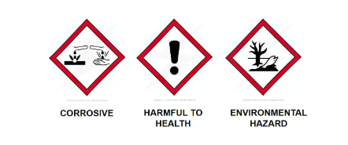
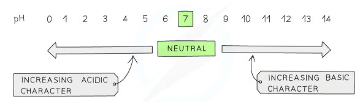
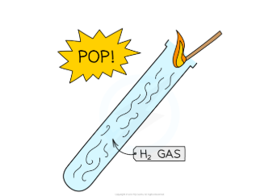
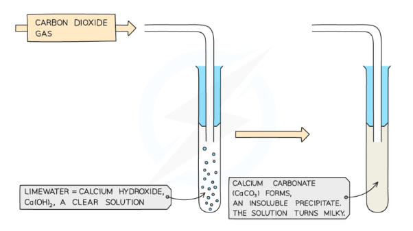
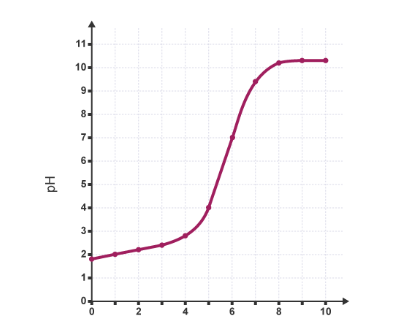
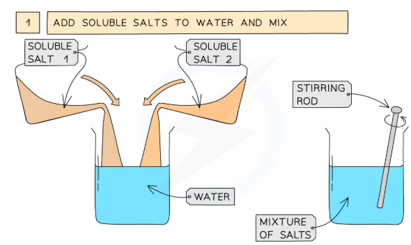
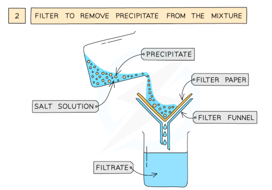
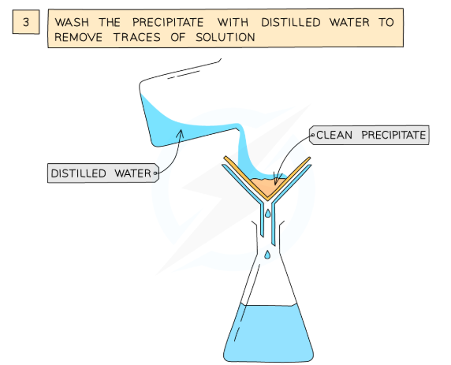
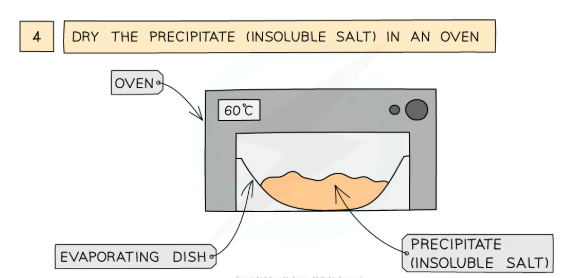
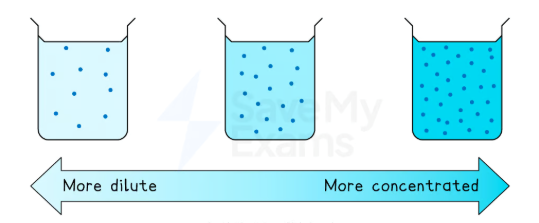

Definitions
| Term | Definition |
|---|
| Acid | Releases H+ ions when dissolved in water; pH < 7 |
| Alkali | Soluble base; releases OH− ions in water; pH > 7 |
| Base | Any substance that neutralises an acid (not all bases dissolve) |
| Neutralisation | H+(aq) + OH−(aq) → H2O(l) |
| Salt | Ionic compound formed when an acid reacts with a base |

Always check hazard symbols before handling acids
The pH Scale

pH scale: 0–14 — lower = more acidic, higher = more alkaline
| pH | Solution type | Example |
|---|
| 0–3 | Strongly acidic | HCl, stomach acid (pH 2) |
| 4–6 | Weakly acidic | Rainwater, vinegar |
| 7 | Neutral | Pure water, NaCl solution |
| 8–10 | Weakly alkaline | Blood, baking soda |
| 11–14 | Strongly alkaline | NaOH solution, bleach |
Exam tip: Measure pH accurately with a pH probe/meter. Estimate pH with universal indicator. Litmus paper only tells you acid or alkali — it does NOT give a pH value.
Indicators
| Indicator |
Colour in acid |
Colour in alkali |
| Litmus | red | blue |
| Phenolphthalein | colourless | pink |
| Methyl orange | red | yellow |
Universal indicator: red → orange → yellow → green (neutral) → blue → purple. Do not use it for titrations — the colour change is too gradual; use phenolphthalein or methyl orange instead.
Reactions of Acids
| Reactants | Products | Equation example |
|---|
| Acid + metal | Salt + hydrogen | 2HCl + Zn → ZnCl2 + H2 |
| Acid + metal oxide | Salt + water | H2SO4 + CuO → CuSO4 + H2O |
| Acid + metal hydroxide | Salt + water | HCl + NaOH → NaCl + H2O |
| Acid + metal carbonate | Salt + water + CO2 | 2HNO3 + CaCO3 → Ca(NO3)2 + H2O + CO2 |
| Acid | Salt anion formed |
|---|
| Hydrochloric acid (HCl) | chloride |
| Sulfuric acid (H2SO4) | sulfate |
| Nitric acid (HNO3) | nitrate |
Watch out: Carbonate reactions produce three products: salt + water + CO2. Students who forget the CO2 lose a mark every time.
Testing for Gases Produced

Hydrogen: lit splint → squeaky pop

Carbon dioxide: limewater turns milky (CaCO3 precipitate)
Making Salts — Which Method?
| Method | Use when… | Example salt |
|---|
| Excess solid + filtration | Base is insoluble (can be filtered off) | Copper sulfate (CuO + H2SO4) |
| Titration | Both reactants are soluble | Sodium chloride (NaOH + HCl) |
| Precipitation | The salt is insoluble | Lead iodide (Pb(NO3)2 + KI) |
Excess Solid Method (CP3 — Copper Sulfate)
- Add excess copper oxide to warm dilute sulfuric acid
- Stir until no more solid dissolves (all acid used up)
- Filter to remove excess copper oxide
- Evaporate filtrate gently to concentrate
- Leave to crystallise, then filter and dry
Why excess solid? Ensures all the acid reacts — no acid left to contaminate crystals. Excess base is easily filtered off because it is insoluble.
▶ Watch: Making Copper Sulfate Crystals (YouTube)
Titration Method (CP6 — Sodium Chloride)
- Pipette 25.0 cm3 of alkali into a conical flask
- Add a few drops of indicator
- Fill burette with acid; record initial reading
- Add acid slowly; swirl; add drop by drop near end-point
- Stop at permanent colour change
- Calculate titre = final − initial reading
- Repeat to get concordant results (within 0.10 cm3)
- Calculate mean using concordant results only (2 d.p.)

Titration curve — steep section = equivalence point
Common mistakes: Including the rough titre in the mean; giving the mean to 1 d.p.; using non-concordant results; not naming which indicator you used.
▶ Watch: How to Titrate an Acid and an Alkali (BBC Bitesize)
Precipitation Method (Insoluble Salts)

1 — Mix two soluble salt solutions

2 — Filter to collect the precipitate

3 — Wash with distilled water

4 — Dry in oven at 60°C
Exam tip: The washing step is a required mark point — "wash with distilled water to remove soluble impurities." Don't skip it in 6-mark answers.
Strong & Weak Acids Higher
| Strong acid | Weak acid |
|---|
| Examples | HCl, H2SO4, HNO3 | CH3COOH, citric acid |
| Ionisation | Complete (→) | Partial (⇌) |
| pH (same conc.) | Lower | Higher |
| Conductivity | Higher | Lower |
| Reaction rate | Faster | Slower |

Concentration = mol dm−3 (independent of strength)
Key distinction: Strong = fully ionised. Concentrated = high mol/dm3. These are independent — you can have a dilute strong acid or a concentrated weak acid. Diluting a strong acid 10× raises pH by exactly 1 unit.
Key Points to Remember
Naming salts
HCl → chloride
H2SO4 → sulfate
HNO3 → nitrate
Gas tests
H2: squeaky pop
CO2: limewater turns milky
O2: relights glowing splint
Titration numbers
Concordant = within 0.10 cm3
Mean to 2 d.p.
Never include rough titre